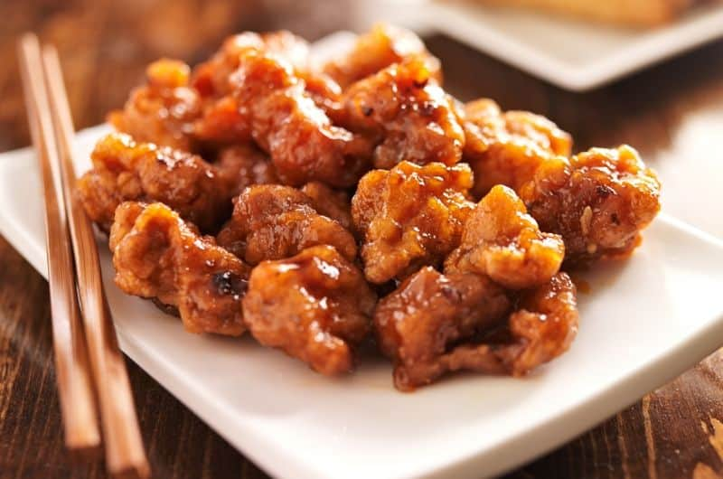

Orange Chicken

Description:
A delicious citrus chicken recipe with flavors reminiscent of the orange chicken from a popular restaurant in the mall.
Ingredients:
Sauce:
- 1 ½ cups water
- 2 tablespoons orange juice
- ¼ cup lemon juice
- ⅓ cup rice vinegar
- 2 ½ tablespoons soy sauce
- 1 tablespoon grated orange zest
- 1 cup packed brown sugar
- ½ teaspoon minced fresh ginger root
- ½ teaspoon minced garlic
- 2 tablespoons chopped green onion
- ¼ teaspoon red pepper flakes
- 3 tablespoons cornstarch
- 2 tablespoons water
Chicken:
- 2 boneless, skinless chicken breasts, cut into 1/2 inch pieces
- 1 cup all-purpose flour
- ¼ teaspoon salt
- ¼ teaspoon pepper
- 3 tablespoons olive oil
Steps:
-
Pour 1 1/2 cups water, orange juice, lemon juice, rice vinegar, and soy sauce into a saucepan and set over medium-high heat. Stir in the orange zest, brown sugar, ginger, garlic, chopped onion, and red pepper flakes. Bring to a boil. Remove from heat, and cool 10 to 15 minutes.
-
Place the chicken pieces into a resealable plastic bag. When contents of saucepan have cooled, pour 1 cup of sauce into bag. Reserve the remaining sauce. Seal the bag, and refrigerate at least 2 hours.
-
In another resealable plastic bag, mix the flour, salt, and pepper. Add the marinated chicken pieces, seal the bag, and shake to coat.
-
Heat the olive oil in a large skillet over medium heat. Place chicken into the skillet, and brown on both sides. Drain on a plate lined with paper towels, and cover with aluminum foil.
-
Wipe out the skillet, and add the sauce. Bring to a boil over medium-high heat. Mix together the cornstarch and 2 tablespoons water; stir into the sauce. Reduce heat to medium low, add the chicken pieces, and simmer, about 5 minutes, stirring occasionally.
Back to top
Homepage